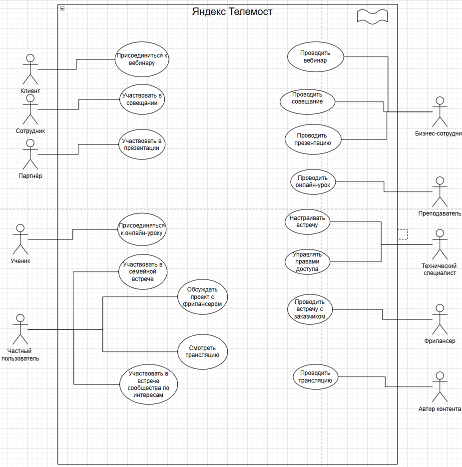

Это обычный абзац текста, который содержит inline code, bold text, italic text и даже сочетание bold and italic combined.
Это блок цитаты.Он может быть многострочным.Внутри цитаты можно использовать жирный шрифт.
Это ссылка: GitHub
Это картинка:

cpp
#include <iostream>
int main() {
std::cout << "Hello, ANTLR4!" << std::endl;
return 0;
}